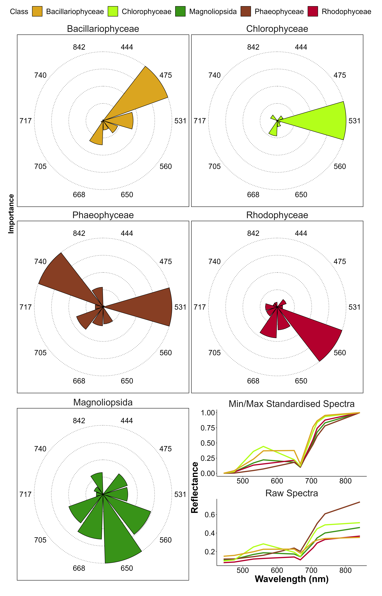
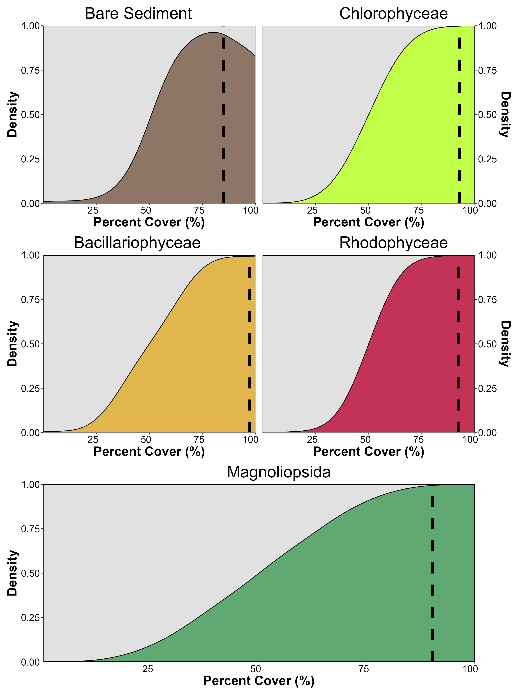

3 Discriminating Seagrasses from Green Macroalgae in European Intertidal Areas Using High-Resolution Multispectral Drone Imagery
3.1 Introduction
Coastal areas are vital hotspots for marine biodiversity, with intertidal seagrass meadows playing a crucial role at the interface between land and ocean (Unsworth et al., 2022). Seagrass meadows provide a myriad of ecosystem services, including carbon sequestration, oxygen production, protection against sea-level rise and coastline erosion, and mitigation of eutrophication (Sousa et al., 2019; Unsworth et al., 2022). They serve as vital habitats for a diverse array of marine and terrestrial species, providing living, breeding, and feeding grounds (Gardner and Finlayson, 2018; Jankowska et al., 2019; Zoffoli et al., 2023). Due to the concentration of human activities in coastal zones, seagrass meadows are directly exposed to and impacted by anthropogenic pressures. Global regression and fragmentation of seagrass meadows are currently observed due to climate change, diseases, urbanization, land reclamation, dredging, competition with alien species, and reduction in water quality (Chefaoui et al., 2018; Duffy et al., 2019; Lin et al., 2018; Nguyen et al., 2021; Orth et al., 2006; Rasheed and Unsworth, 2011; Soissons et al., 2018; Sousa et al., 2019). Both habitat fragmentation and reduction, in turn, can severely compromise the effectiveness of ecosystem services provided by seagrass meadows. While improvements in water quality and hydrodynamics have been recently reported in Europe, allowing an overall recovery of seagrass ecosystems at local and European scales, many coastal waters worldwide are still subjected to strong eutrophication processes (Los Santos et al., 2019; Sousa et al., 2019; Zoffoli et al., 2021). Coastal eutrophication has been associated to excessive accumulation of green macroalgae, so-called green tides (Devlin and Brodie, 2023). Green tides produce shade and suffocation over seagrass individuals, thus threatening the health of seagrass ecosystems (Wang et al., 2022).
The importance of seagrass meadows and the variety of ecosystem services they provide have led to the enhancement of both global and regional programs to monitor EOVs such as seagrass composition (Miloslavich et al., 2018), as well as EBVs such as seagrass taxonomic diversity, species distribution, population abundance, and phenology (Pereira et al., 2013). Traditionally, indicators of seagrass status have been quantified using in situ measurements. However, the acquisition of field measurements in intertidal zones is notoriously challenging. Intertidal seagrass meadows are only exposed during low tide and can be situated in difficult-to-reach mudflats, potentially leading to inaccurate and limited estimations with conventional sampling techniques (Nijland et al., 2019). Satellite observations have been proven effective in complementing in situ sampling, allowing for near real-time and consistent retrieval of seagrass EOVs and EBVs over extensive meadows (Coffer et al., 2023; Davies et al., 2024a, 2024b; Traganos and Reinartz, 2018; Xu et al., 2021; Zoffoli et al., 2021).
While satellite RS provides temporally consistent observations over large spatial scales, its utilization over intertidal areas is limited by several constraints. Satellite missions with a high temporal resolution (e.g. daily MODIS observation) are limited by too coarse spatial resolution (>100 m) to accurately map patchy seagrass meadows. Missions with a high spatial resolution such as Sentinel-2 (10 m) or Landsat8/9 (30 m) can be limited by low spectral resolution. The limited number of spectral bands challenges accurate discrimination of seagrass from other co-existing macrophytes. In particular, Chlorophyceae (green algae) and marine Magnoliopsida (seagrass) share the same pigment composition (Douay et al., 2022; Ralph et al., 2002), resulting in a similar spectral signature in terms of reflectance, especially in the visible range (Bannari et al., 2022; Davies et al., 2023a). Recently, using advanced machine-learning algorithms trained with a large hyperspectral library of more than 300 field reflectance spectra, Davies et al. (2023a) demonstrated that it was possible to discriminate Magnoliopsida from Chlorophyceae using reflectance spectra at Sentinel-2 ’s spectral resolution. However the application of this approach to satellite RS remains to be validated. Moreover patches of green algae can develop at small spatial scales that are not observable using Sentinel-2 and/or Landsat-8/9 images (Tuya et al., 2013), especially during the initial stage of a green tide.
Drones (UAVs) can potentially fill the data gaps left by satellite RS and in situ measurements, due to their ability to provide spatially-explicit observations at very high spatial resolutions (pixel size from mm to cm) while capturing data at multi-spectral resolution (Fairley et al., 2022; Oh et al., 2017). The versatility of drones allows for their application across a diverse thematic range , from coastal zone management (Adade et al., 2021; Angnuureng et al., 2022; Casella et al., 2020) to mapping species distribution (Brunier et al., 2022; Joyce et al., 2023; Roca et al., 2022; Román et al., 2021; Sousa et al., 2019; Tallam et al., 2023). However, when applied to coastal habitat mapping, previous case studies were mostly limited to a low number of drone flights over a single study site, restricting the generalizability of their application over wider geographical scales (Brunier et al., 2022; Collin et al., 2019; Román et al., 2021; Rossiter et al., 2020). These studies have demonstrated the capability of drones to map intertidal habitats, including seagrasses; however a broader generalization of these findings is still lacking. The current paper uniquely expands the spatial and methodological scope of drone-based RS for intertidal habitat mapping across a broad biogeographical range. It demonstrates the feasibility of accurately classifying diverse macrophyte types across various study sites, with a particular focus on distinguishing Magnoliopsida (seagrasses) and Chlorophyceae (green algae). Unlike previous studies, our approach integrates multiple spatial scales by simulating satellite resolutions and quantifying the impact of spatial resolution on classification accuracy. Nine drone flights were performed over soft-bottom intertidal areas along the Atlantic coastlines of two European countries (France and Portugal), covering a wide range of habitats, from monospecific seagrass meadows to meadows mixed with green, or red macroalgae. A deep learning algorithm was trained and validated for macrophyte discrimination, emphasizing applicability across diverse sites without losing prediction accuracy. The classification maps obtained at a very high spatial resolution with the drone were spatially degraded to satellite resolutions, making it possible to assess the effect of spatial resolution on classification accuracy, and provide insights for coastal habitat mapping using satellite remote sensing. This study is, therefore, among the first to quantify the effects of spatial resolution on the accuracy of drone-based macrophyte classification across a wide geographical scale, providing a framework to better understand satellite-based classification challenges.
3.2 Materials & Methods
3.2.1 Study sites
Seven study sites distributed between France and Portugal were selected for their extensive intertidal seagrass beds. Two sites were located in the Gulf of Morbihan, France (Figure fig-map A : 47.5791°N, 2.8018°W). This gulf covers an area of 115 km² and is only connected to the sea through a 900 m wide channel. A total of 53 small islands are scattered across the gulf leading to 250 km of shorelines. Patchy seagrass meadows can be found on many of these islands. One of the sites within the gulf was on one its islands (Arz) and the other was located further south on a mainland beach area (Duer). The Gulf of Morbihan is a Natura 2000 site and a Regional Protected Area due to its rich biodiversity, including its seagrass meadows, and is also classified as a RAMSAR site, which highlights its significance as a wetland of international importance. Two other sites were located in Bourgneuf Bay, France (Figure fig-map B : 46.9849°N, 2.1488°W) which is a 340 km² semi-enclosed macrotidal bay, protected from waves by Noirmoutier Island. Bourgneuf bay hosts a large intertidal seagrass meadow of about 6 km² (Zoffoli et al., 2021). Within this meadow, the sites observed by drones (L’Epine and Barbatre) contained monospecific beds of Zostera noltei (dwarf eelgrass) with very little mixing with other macrophytes. Bourgneuf Bay is also part of the Natura 2000 network and serves as a RAMSAR site due to its critical habitat for migratory bird species and its extensive seagrass meadows (Zoffoli et al., 2023).
Three sites were surveyed in the Ria de Aveiro Coastal Lagoon in Portugal (Figure fig-map C : 40.6887°N, 8.6810°W). The extent of this lagoon is ~83 km² (at low tide) with many narrow channels, large salt marshes and many mudflats that uncover at low tide (Sousa et al., 2017). It is connected to the open sea through a single channel, with a tidal lag between the North and the South of the lagoon. The southernmost site (Gafanha) is a mudflat located in the Mira channel (one of the four main channels of the lagoon) whereas the two other sites (Mataducos and Marinha Lanzarote) were situated in the middle of the lagoon and only accessible by boat. These Portuguese sites are characterized by a more diverse intertidal vegetation, where patches of seagrass intermingle with red, brown, and green macroalgae. The Aveiro Lagoon, like the other study areas, is a Natura 2000 site and a RAMSAR wetland, recognized for its rich mosaic of habitats and importance for biodiversity, including migratory bird species and intertidal vegetation.
3.2.2 Field sampling
3.2.2.1 Drone acquisition
At each location, a DJI Matrice 200 quadcopter drone equipped with a Micasense RedEdge Dual MX multispectral camera was flown to take 1.2 million pixel reflectance photographs with ten spectral bands ranging from the blue to the NIR: 444, 475, 531, 560, 650, 668, 705, 717, 740 and 840 nm. To ensure consistent lighting conditions across flight paths, the drone’s trajectory was aligned to maintain a solar azimuth angle of 90 degrees. An overlap of 70% and 80% (side and front respectively) between each image was set for each flight. A downwelling light sensor (DLS2) was used to acquire irradiance data concomitantly with the camera measurements. Raw data were calibrated in reflectance using a calibration panel reflective at ~50% provided by the manufacturer. Across all sites, flights were made at two different altitudes : 12 m or/and 120 m, with a spatial resolution of 8 mm and 80 mm, respectively (Table tbl-flights). Low-altitude flights, with a spatial resolution of 8 mm, were used to build the training dataset for the neural network, as this high resolution allowed for precise photo-interpretation of vegetation classes. In contrast, high-altitude flights were used for validation purposes.

3.2.2.2 Ground Control Points
Before each flight, targets used as ground control points were distributed over the study site and georeferenced with a Trimble © Geo XH 6000 differential GPS (dGPS). Ground control points were used to correct georeferencing imprecision of orthomosaics with a horizontal and vertical accuracy of 10cm. A dGPS was also used to georeference quadrats of 0.25 m², which assessed the presence or absence of five key taxonomic classes of intertidal vegetation: Bacillariophyceae (benthic diatoms forming biofilms at the sediment surface during low tide with biofilm’s size ranging from small patches (m²) to entire mudflats (km²); henceforth: Benthic diatoms), Phaeophyceae (brown macroalgae generally attached to rocks or other substrates able to form dense beds in the intertidal zone; henceforth: Brown macroalgae), Magnoliopsida (seagrasses, rooted flowering marine plants able to form extensive meadows on soft sediments; henceforth: Seagrasses), Chlorophyceae (green macroalgae, typically found attached to rocks or washed ashore; henceforth: Green macroalgae), and Rhodophyceae (red macroalgae, attached to hard substrates but can also be found on soft-bottom substrate; henceforth: Red macroalgae). Only homogeneous vegetation patches extending over several meters were selected as ground control points. Pictures of each quadrat were uploaded online to the open-portal Global Biodiversity Information Facility (GBIF) platform (Davies et al., 2023b). Each photograph was also processed to estimate the percent cover of each type of vegetation using an image processing software (ImageJ, Schneider et al., 2012). Hyperspectral reflectance signatures of each vegetation class were recorded using an ASD FieldSpec HandHeld 2 spectroradiometer, which acquires reflectance between 325 and 1075 nm, with 1 nm of spectral resolution. Hyperspectral signatures served dual purposes: they validate the radiometric calibration of drone data and contribute to misclassification reduction in photo interpretations.
3.2.3 Drone Processing
A structure-from-motion photogrammetry software (Agisoft Metashape, Agisoft, 2019) was used to process images to obtain multispectral orthomosaics of each flight. The process for orthomosaicking was identical for every flight. First, key tying points were detected inside each image and between overlapping images in order to obtain a sparse point cloud. This cloud was cleaned using a reprojection accuracy metric to remove noisy points. A dense point cloud was then produced using a structure from motion algorithm. A surface interpolation of this dense point cloud was made to obtain a DSM, used to reconstruct the multispectral ortho-image (Nebel et al., 2020). Low-altitude drone flights produced ortho-images with a very high spatial resolution (8 mm per pixel), making it efficient to visually distinguish between the various types of vegetation. High-altitude flights allowed to cover larger areas and produced images with a pixel size of 80 mm (Table tbl-flights).
3.2.4 General Workflow
The spectral similarities of the reflectance signatures at the spectral resolution of the Micasense senor between intertidal green macrophytes (Magnoliopsida and Chlorophyceae) make their discrimination challenging using simple classification algorithms (Figure fig-vegetation F). To overcome this challenge, a deep learning classification method was trained, validated, and applied to each drone flight (Figure fig-workflow).

3.2.4.1 Training dataset building

A dataset containing photo-interpreted drone reflectance pixels was built to train a Neural Network model. The training pixels were categorized into seven different classes, representing the various habitats encountered at the different study sites: sediment, water, green macroalgae, seagrasses, Benthic diatoms, brown macroalgae and red macroalgae. Only data from the low-altitude flights (Table tbl-flights) were used for training because their 8 mm spatial resolution allowed to avoid spectral sub-pixel mixing and to accurately identify vegetation classes. In the field, seagrasses displayed two types of color, most seagrass had green leaves, brownish leaves were also observed due to senescence or photo-degradation. Careful attention was given to incorporating training pixels from both color types into the training dataset for the seagrass class. This approach was consistently applied to all classes within the model. More than 418,000 pixels at 8 mm resolution from the 3 training flights were used to train the model (Table tbl-validationPX). For model training, 21 variables were used as predictors: the ten raw spectral bands of the Micasense RedEdge Dual MX multispectral camera (ranging from 444 nm to 840 nm), the same ten spectral bands standardized using a min/max transformation Equation eq-stdspectra and the Normalized difference vegetation index (NDVI, Equation eq-NDVI). Standardisation of spectral bands is commonly used to eliminate the scaling differences between spectra and to limit the effect of biomass on the spectra shape (Davies et al., 2023a; Douay et al., 2022).
3.2.4.2 Model building
A neural network classification model was built using the fastai workflow (Howard et al., 2018). This model was composed of 2 hidden layers and has a total of 26 054 trainable parameters. Parameters have been fine-tuned using 12 epoch to minimize the error rate. This model has been called DISCOV, standing for Drone Intertidal Substrate Classification Of Vegetation.
3.2.4.3 Validation
The workflow of this study revolves around two distinct flight heights (12 and 120 m, Figure fig-workflow) where ensuring consistency between reflectance at both heights is crucial. This comparison was conducted at sites where low and high-altitude flights overlapped. To compare reflectance of both flights, the low-altitude flights were resampled to the same spatial resolution and grid as the high-altitude flights using a median resampling method. Reflectance values were then extracted, and a scatterplot was generated. The Root Mean Square Error (RMSE) was computed to compare the difference between the raw and standardised reflectance.
The classification model was applied to all flights at both 12 and 120 m of altitude. In situ information on georeferenced class type and percent cover, acquired over homogeneous vegetation patches at the same time as drone flights was used to assess the model accuracy. These images were used to construct a validation dataset indicating the presence or absence of each class. Additionally, to the quadrat-based validation dataset, polygons of each class were photo interpreted in order to increase the number of pixels of the validation dataset. A total of 536,000 pixels were used to validate the Neural Network classifier. The sites with the lowest and highest number of validation data were Gafanha Low (17,316 pixels) and Marinha Lanzarote (159,713 pixels) respectively. A confusion matrix, along with precision metrics such as global accuracy, sensitivity, specificity, F1 score, and Kappa coefficient, were generated for each site. These metrics were computed as follow :
\[ \text{Global accuracy} = \frac{\sum_{i=1}^{k} \text{TP}_i}{\sum_{i=1}^{k} \left(\text{TP}_i + \text{FP}_i + \text{FN}_i \right)} \]
\[ \text{Sensitivity}_i = \frac{\text{TP}_i}{\text{TP}_i + \text{FN}_i} \]
\[ \text{Specificity}_i = \frac{\text{TN}_i}{\text{TN}_i + \text{FP}_i} \]
\[ \text{F1}_i = \frac{2 \cdot \text{TP}_i}{2 \cdot \text{TP}_i + \text{FP}_i + \text{FN}_i} \] Where \(\text{TP}_i\), \(\text{TN}_i\), \(\text{FN}_i\) and \(\text{FP}_i\) represent the true positives, true negatives, false negatives and false positives relative to the class i.
All validation matrices were then aggregated to create an overall matrix
3.2.5 Variable Importance
Variable Importance Plots (VIP) serve as a method to identify which predictors are important for predicting a specific class. Out of the 21 predictors used in this study, Variable Importance was computed only for the raw and standardized values of the 10 spectral bands captured by the MicaSense camera. This is achieved by repeatedly predicting the same dataset while randomly shuffling one predictor at a time. The benchmark score obtained after each iteration is then compared to the benchmark score obtained without shuffling any variables. The greater the difference between these two benchmark values, the more important the variable is for the model (Wei et al., 2015).
3.2.6 Influence of the spatial resolution on classification
To assess the impact of spatial resolution on the model’s output, we resampled the drone orthomosaics from their native resolution (8 cm for high-altitude flights) using the “average” method from the terra package in R. The rasters were resampled to 32 different resolutions, ranging from 10 cm to 30 m. DISCOV was then applied to these resampled rasters, and the results were compared to the original model predictions. For each resolution and vegetation class, we calculated the predicted area loss, where a score of 0 indicates no area loss during spatial resampling, and a score of 100 indicates complete loss of the vegetation class.
We used a Generalized Linear Model (GLM) with a Beta distribution to examine the relationship between pixel resolution, vegetation class, and their interaction on the loss of vegetation. The loss of vegetation was modelled as function of the interaction between pixel resolution and vegetation class (Benthic diatoms, brown macroalgae, seagrass, green macroalgae and red macroalgae). Sample vs fitted residuals and quartile-quartile graphics were assessed visually, to ensure assumptions of the models used were met.
3.2.7 Impact of mixed vegetation cover on the prediction
The key aspect of the workflow adopted in the present study is the mapping at two different altitudes (12 and 120 m), resulting in two distinct resolutions for the same area (8 and 80 mm; respectively). The high-resolution flight was used to estimate the sub-pixel composition for each pixel of the lower-resolution flight. Consequently, within each pixel of the high-altitude flights, the contribution of each vegetation class (% cover) was obtained, and a kernel density plot was generated. This plot provided a visual representation of the model’s behaviour in mixed vegetation scenarios. It helped to understand the minimum vegetation cover of a given class within a pixel necessary for the model to confidently predict that class.
3.3 Results
3.3.1 Reflectance comparison between the two different altitudes
In this study, drone flights were conducted at two different altitudes (12 and 120 m) to construct the neural network model. At the sites where the flights at both altitudes overlapped, the reflectance was compared. Overall there was a good agreement between the two altitudes (RMSE : 0.027 ; Figure fig-CompareRef).
There was a slight underestimation of raw reflectance values in the high-altitude flight, particularly for higher reflectance values (Figure fig-CompareRef A). Since both flights were conducted over vegetated areas, the highest reflectance values correspond to the IR part of the spectrum. This difference was not present when the reflectance has been standardized (Equation eq-stdspectra ; Figure fig-CompareRef B).
3.3.2 Classification
Each drone flight was used to produce a prediction map, as well as a probability map that indicates the model-derived probability of the selected class for every pixel. The low-altitude flight conducted in Gafanha, Portugal, represented the site with the highest complexity (Figure fig-GafLow). Among the five vegetation classes on which the model was trained, four were present on this site, with green and red macroalgae mixed with a seagrass meadow. There were also benthic diatoms biofilms on sediment surface. Although the seagrass was solely composed of a single species, Zostera noltei, two colours of this species could be observed: dark green (corresponding to healthy leaves) and brown (when leaves are senescent or have an altered pigment composition). Regardless of the variation of colour, the class Magnoliopsida (seagrass) was accurately predicted by the model (F1 score of 0.96 at that site).
The high-altitude flight over Gafanha covered a total area of ~1 km² (Figure fig-GafHigh). A channel contouring a small island was masked in the prediction map. Most of the vegetation area was classified as seagrass by the model, including patches with brown leaves. Only a few pixels were classified as green macroalgae (F1 score of 0.55). Patches of red macroalgae were correctly classified (F1 score of 0.85). In the northern part of the site and near the land edges, patches of the schore angiosperm Sporobolus maritimus (syn. Spartina maritima) were misclassified, either as seagrass or as brown algae (F1 score of 0.77 and 0.71, respectively).
Among the high altitude flights, the one acquired over the inner part of Ria de Aveiro coastal lagoon covered the largest area with approximately 1.5 km² (Figure fig-Boat). The vegetation present at the site was dominated by seagrass and red macroalgae. The classification provided consistent results, with a patchy seagrass meadow mixed with red macroalgae on the eastern part of the site. As shown in the zoom (Figure fig-Boat), the edges of the meadow were mixed with green macroalgae (Ulva sp.), which the model agreed with (F1 score of 0.89 for green algae, 0.97 for seagrass and 0.98 for red algae).
The flight over L’Epine in Noirmoutier Island, France (Figure fig-Dike) was conducted near a dike, which crossed the northern part of the site from West to East. Alongside this dike, Fucale brown macroalgae (Fucus spp., Ascophyllum nodosum) were attached to sparse rocks, and stranded green algae (Ulva spp.) could be observed, which was correctly reproduced by the prediction (Figure fig-Dike Bottom). This site was characterized by a high mixture between green macroalgae and seagrass but these two classes were correctly discriminated by the classifier (F1 score of 0.97 and 0.98 respectively).
3.3.3 Validation of the model
With all drone flights combined, the model’s global accuracy was 94.26%, with a Kappa coefficient of 0.92 (Figure fig-Validation).

The lowest-performing site was Gafanha High (global accuracy of 75.45%), whereas Mataduços was the site with the most accurate prediction (global accuracy of 98.05%). Overall, the classes Phaeophyceae, Magnoliopsida, Sediment, and Rhodophyceae were correctly classified with a balanced accuracy of 1, 0.96, 0.96, and 0.91, respectively. Bacillariophyceae was the least accurate class (accuracy of 0.72), mainly due to confusion with Magnoliopsida and Sediment.
3.3.4 Variable importance
The computation of the variable importance made it possible to identify which bands were the most useful for class prediction (Figure fig-VIP).

The spectral bands at 444, 717 and 842 nm of the Micasense camera did not provide important information to discriminate any of the vegetation classes. The band at 531 nm was the most important predictor by far for the classifier to accurately predict Chlorophyceae. In fact, at this wavelength, the Chlorophyceae spectra showed the highest reflectance among all vegetation classes (Figure fig-VIP). The bands at 531 and 740 nm were the most important predictors for Phaeophyceae, corresponding to the lowest reflectance among all classes. Bands at 475 and 560 nm were the most important predictors for Bacillariophyceae and Rhodophyceae, respectively. Four predictors, ranging from the green (560 nm) to the RedEdge (705 nm) bands were important to accurately predict Magnoliopsida.
3.3.5 Effect of spatial resolution on the classification
Clear differences were seen in vegetation loss across spatial resolutions and vegetation classes (Figure fig-pixelsize). At a fine resolution of 1m, changes in the retrieved area for each vegetation type are minimal. Green macroalgae show the highest loss, with 1.2% area lost compared to the native resolution (80 mm). As the resolution coarsens to 10m, vegetation loss becomes more pronounced, with green macroalgae again experiencing the greatest reduction (12% compared to 8cm) and seagrass showing the smallest loss (1.3%). All green macroalgae have been lost at a resolution of 30m (100% compared to 8cm), while seagrass experiences a relatively small reduction of 11%. Brown and red macroalgae show lower declines, with losses at 30m resolution reaching approximately 37% and 59%, respectively.
3.3.6 Effect of the percent cover on the prediction
Using the very high-resolution low-altitude flight (8 mm pixels), we determined the minimal percent cover required to correctly classify a given class within the corresponding high-altitude flight (8cm pixel resolution ; Figure fig-upscaling).

A cover of at least 80% was sufficient to have all the 80 mm pixels correctly classified, except for Magnoliopsida, which required a higher cover (>90%) to be accurately classified. Concerning the probability of each class, there is a linear relationship between the percent cover and the confidence of the model to predict the class. To predict green macroalgae with a model likelihood of 0.85, a cover of 93% was needed, 90% for seagrass, 92% for red macroalgae, and 97% for benthic diatoms. When the vegetation cover of a given class was 100%, coarser high-flight pixels were correctly classified for all the classes except for bare sediment, which was only correctly classified 80% of the time. This phenomenon may be attributed to the time gap between the two flights, allowing for MPB migration to the sediment surface during low tide, consequently altering the model’s classification from bare sediment to Bacillariophyceae.
3.4 Discussion
3.4.1 Vegetation Discrimination
The primary objective of this study was to develop a method for the accurate classification of emerged macrophytes observed during low tide on tidal flats, specifically focusing on distinguishing between Chlorophyceae (green macroalgae) and marine Magnoliopsida (seagrasses) using a multispectral resolution. The discrimination between seagrasses and green macroalgae is challenging due to their optical similarity in the visible range (Bannari et al., 2022; Oiry and Barillé, 2021; Veettil et al., 2020). These two macrophytes share a similar pigment composition: Chla, Chlb (an additional photosynthetic pigment), and accessory carotenoids such as zeaxanthin, lutein and neoxanthin (Figure fig-Pigm). Their spectral responses could be close, particularly at a multispectral resolution. Seagrass and green macroalgae frequently co-occur in intertidal areas, and can intermingle within a RS pixel if the spatial resolution is too low. Here, the issue of intra-pixel mixing was resolved thanks to the very high spatial resolution of the drone (from 8 to 80 mm). In this study the risk of spectral confusion was avoided with a machine-learning approach exploiting a neural networks classifier. Our drone flights and a recent study based on in situ radiometry, suggested that a sensor with at least eight spectral bands ranging from 500 to 850 nm, and including a green band at 530 nm and a RedEdge band at 730 nm, was crucial to accurately discriminate green macroalgae from seagrasses (Davies et al., 2023a).

Meeting these two criteria, the Micasense RedEdge-MX DUAL camera used in this study, enabled the classifier to achieve 97% accuracy between these two classes (Figure fig-ValidationGreen). Even if their pigment composition is similar, differences in the spectral shape can be observed, with green algae having a higher reflectance peak at 560 nm as well as a higher NIR plateau than seagrass (Figure fig-vegetation). Such differences were previously attributed to differences in pigments concentration and/or ratios (Bargain et al., 2013), cellular structure as well as in the orientation of the plant at the sediment surface (Beach et al., 1997; Hedley et al., 2018; Kirk, 1994).
The variable importance analysis (Figure fig-VIP) identified that the band at 531 nm was the most important for accurately identifying Chlorophyceae. In fact, at this wavelength, Chlorophyceae exhibited the highest reflectance among all other classes, highlighting the difference in carotenoid to Chla ratios between seagrasses and green macroalgae (Repolho et al., 2017). Concerning Phaeophyceae, the thick cell walls of these macroalgae (Charrier et al., 2021) make it more reflective in the IR part of the spectrum (Slaton et al., 2001), while the presence of fucoxanthin and zeaxanthin result in a low reflectance in the visible region (Figure fig-VIP ; Figure fig-Pigm). These two key features have been identified by the Neural Network as the two principal predictors to accurately identify brown algae (Figure fig-VIP). Similarly, the presence of phycoerythrin and phycocyanin in Rhodophyceae contributes to the lowest reflectance among all classes in the spectral range from 560 to 615 nm (Figure fig-VIP). Indeed the band at 560 nm has been identified as important for identifying this class, likely due to phycoerythrin absorption at this wavelength. Regarding Bacillariophyceae, 475 nm was the most important predictor for this class (Figure fig-VIP). Indeed, the reflectance at 475 nm was higher for Bacillariophyceae than for any other vegetation class (Figure fig-vegetation), very likely due to the low biomass (and associated concentration of blue-absorbing pigments) of these unicellular organisms compared to seagrass and macroalgae.
3.4.2 Altitude and Temporal Effects on Vegetation Prediction Accuracy
The ability to differentiate between various types of vegetation plays a critical role in ecological monitoring and coastal management (European-Commission, n.d.). By distinguishing between seagrasses and macroalgae, our approach facilitates targeted conservation strategies, enabling more effective preservation and restoration efforts in coastal ecosystems. While comparing the reflectance at two different altitudes (12 m and 120 m with a spatial resolution of 8 and 80 mm, respectively), a nearly one-to-one relationship was observed, with a RMSE of 0.02 (Figure fig-CompareRef). This result indicates that the reflectance measured by RS sensors was not significantly influenced by pixel size for these two altitudes. This finding is valuable for integrating drone-based data into larger-scale mapping projects (e.g., combining satellite and drone mapping in side-by-side analyses). The consistency of reflectance across altitudes suggests that drones can be effectively used for finer-scale mapping without compromising data accuracy when merging with other platforms. However, it was observed that there is an underestimation of the IR part of the spectra in the high-altitude dataset (Figure fig-CompareRef). Such disparity in IR reflectance may stem from temporal differences between the flights, possibly resulting in a slightly drier intertidal area and consequently higher IR reflectance. This disparity poses an issue for the methodology followed in the present study, relying solely on one flight height for training. To address this issue, we employed min/max standardized reflectance spectra as predictors for the model Equation eq-stdspectra. This approach allowed us to eliminate the slight reflectance difference between the flights (Figure fig-CompareRef B) and to focus on the shape of the spectra in the visible domain (400 to 700 nm). At these wavelength different pigments are associated with taxonomic diagnostic features. In contrast to subtidal seagrasses, which maintain relatively constant biomass throughout the year, intertidal seagrasses, like the one studied in this work, exhibit strong seasonal phenology (Davies et al., 2024b). At some sites, they completely disappear during the winter and reach their peak above-ground biomass in the summer and early autumn. Along with these seasonal changes in biomass, the pigment composition and ratios also vary throughout the year, reflecting the plants’ adaptations to different environmental conditions (Bargain et al., 2013; Légaré et al., 2022). Standardization of spectral signatures helps to mitigate the impact of changing biomass on the spectral profile, enabling the development of a model that can reliably predict vegetation across different geographical locations and seasons. This approach allows for consistent classification of vegetation despite variations in biomass and fluctuations in light conditions, providing a robust tool for monitoring and predicting vegetation dynamics (Costa et al., 2021; Fyfe, 2003; Piaser et al., 2023). However, due to the strong phenology of intertidal seagrass meadows in Europe, the period when a meadow is well-established can be temporally restricted, limiting the ideal window for accurate detection.
3.4.3 Impact of Pixel Resolution on the prediction and Implications for Satellite Remote Sensing
Pixel resolution plays a critical role in accurately retrieving vegetation areas from RS data. As pixel size increases, we found a consistent decline in area retrieval across all vegetation types, with more pronounced effects for certain types, such as green algae (Figure fig-pixelsize). This highlights the sensitivity of spatial resolution in detecting smaller or more fragmented vegetation features. Green algae, being particularly patchy across all study sites, showed the steepest decline in areal agreement as pixel size increases, which aligns with expectations given the limitations of coarser resolution in capturing fine-scale details.
This resolution-area relationship has important implications for satellite missions like Sentinel-2 and Landsat, which are commonly used in marine and coastal vegetation studies. Both satellites offer high-resolution imagery, with pixel sizes of 10m and 30m, respectively. While these resolutions are suitable for broad-scale environmental monitoring, they may be too coarse to capture finer-scale heterogeneity, as it was observed with green macroalgae in this study. Our findings suggest that, while the 30m resolution of Landsat may be adequate for homogeneous vegetation types, such as seagrass, a higher resolution is essential for accurately mapping patchy vegetation like green algae. These findings have direct implications for environmental management and conservation planning. Overlooking fine-scale vegetation features, such as those seen in green algae, could result in inadequate protection or restoration efforts, particularly in ecologically sensitive coastal zones, as the early stages of green tides could be challenging to detect at coarse resolutions.
Very high-resolution imagery offers more accurate vegetation mapping but comes with trade-offs. As resolution increases, data costs rise, and processing becomes more resource-intensive due to the larger file sizes and computational demands. Consequently, high-resolution data requires more storage and can slow down real-time applications. For large-scale monitoring of homogeneous vegetation types, 10 m resolution of S2/MSI or even the 30 m of Landsat/OLI is often sufficient. However, when mapping vegetation like macroalgae with heterogeneous distribution, the precision provided by higher-resolution imagery is crucial, despite the additional costs and processing challenges it imposes.
3.4.4 Towards climate and biodiversity applications
Climate change, global warming, eutrophication, alien and invasive species development, coastal erosion, and sea level rise are expected to continue impacting coastal ecosystems in the future (Holon et al., 2018; Marquet et al., 2024; Schibalski et al., 2022) and the demand for meaningful and efficient monitoring of coastal habitats has never been higher(Muller-Karger et al., 2018; Oiry and Barillé, 2021; Villalobos Perna et al., 2023). Our findings, particularly the improved discrimination of intertidal seagrass and green macroalgae from other intertidal vegetation classes, highlight the potential of drone-based RS to support diverse applications, from the conservation of biodiversity to climate change adaptation strategies.
Due to increasing coastal eutrophication, macroalgal blooms are becoming increasingly common in many regions around the world (Sutton et al., 2011; Ye et al., 2011). These blooms can have negative impacts on human health and local economic activities, including human health, fishing and aquaculture, tourism, and recreational activities (Villares et al., 1999; Ye et al., 2011). The first green tide events (i.e. bloom of green macroalgae of the genus Ulva) were reported in Brittany, France, in the 1970s and have since been a concern for local stakeholders and economic activities (Ménesguen, 2018). Some regions of the world have witnessed an increase in brown macroalgae blooms, predominantly involving algae of the genus Sargassum washing along the Caribbean coastlines (Louime et al., 2017), and more recently Rugulopteryx okamurea in southern Europe (Roca et al., 2022). Satellite RS has proven to be a valuable tool for mapping the spatial and temporal extent of macroalgal blooms worldwide. However, due to limitations in spatial resolution, it can only effectively map well-developed blooms (Haro et al., 2023; Klemas, 2012). High spatial resolution drone imagery, coupled with an accurate classification algorithm, could be used to map the early stages of macroalgal blooms in areas known to have regular blooms or in new sites. Indeed, this approach could provide early warning alerts to local managers and complimentary to traditional sampling methods to monitor coastal ecosystems. These methods are generally time and resource-intensive, and the findings are often difficult to scale up when applied alone. EO can bridge this gap and meet the need for systematic monitoring of coastal ecosystems over large areas (Papathanasopoulou et al., 2019). The retrieval of EBVs and EOVs through satellite observations has been increasingly common, enabling comprehensive monitoring of entire ecosystems over extended time periods (Ratnarajah et al., 2023; Zoffoli et al., 2021). The WFD mandates the achievement and maintenance of “good ecological status” for all European waters, which necessitates a comprehensive understanding and monitoring of aquatic ecosystems, including coastal habitats like seagrass beds (Foden and Brazier, 2007; Nordlund et al., 2024; Zoffoli et al., 2021).
Effective and efficient monitoring tools are essential for identifying the impacts of human activities and natural changes on coastal ecosystems. On-demand, multispectral drone observations at very high spatial resolution provide a novel and powerful tool to rapidly and accurately acquire ground truth data, which can be used to develop ML algorithm for satellite sensors (Davies et al., 2024a). Spatially resolved data are indeed critical for calibrating and validating satellite RS observations, thereby enhancing our capacity to monitor vast coastal areas. The integration of drone technology facilitates a scalable approach to environmental surveillance while taking into account the patchiness of vegetation, offering significant advancements in the spatial and temporal resolution of data collection. This, in turn, supports the EU WFD’s objectives by enabling more informed and timely management decisions for the conservation and restoration of aquatic ecosystems.
3.5 Conclusion
The utilization of very high spatial resolution (from 8 to 80 mm) drone-based RS coupled with ML techniques has proven to be an effective method for the discrimination of intertidal seagrasses from green macroalgae with a multispectral resolution sensor. Standardized reflectance was incorporated in the Neural Network model allowing for a better discrimination of spectral features related to pigment absorption in the visible region of the spectrum. There was a striking difference between the variable of importance to discriminate Magnoliopsida from Chlorophyceae. The latter was essentially identified with the 451 nm spectral band while more spectral bands were needed to identify the former, notably 650, 560, 668, and 705 nm. As the spectral bands of the Micasense RedEdge Dual sensor are very similar to those of Sentinel-2/MSI, we suggest that multispectral satellite data have the potential to perform this discrimination between these green macrophytes. The findings underscore the importance of adopting advanced RS tools in ecological studies and environmental monitoring, providing a foundation for future research and policy implementation aimed at ecosystem conservation and restoration.
Adade, R., Aibinu, A.M., Ekumah, B., Asaana, J., 2021. Unmanned aerial vehicle (UAV) applications in coastal zone management—a review. Environmental Monitoring and Assessment 193, 1–12.
Agisoft, 2019. Agisoft metashape.
Angnuureng, D.B., Brempong, K., Jayson-Quashigah, P., Dada, O., Akuoko, S., Frimpomaa, J., Mattah, P., Almar, R., 2022. Satellite, drone and video camera multi-platform monitoring of coastal erosion at an engineered pocket beach: A showcase for coastal management at elmina bay, ghana (west africa). Regional Studies in Marine Science 53, 102437.
Bannari, A., Ali, T.S., Abahussain, A., 2022. The capabilities of sentinel-MSI (2A/2B) and landsat-OLI (8/9) in seagrass and algae species differentiation using spectral reflectance. Ocean Science 18, 361–388.
Bargain, A., Robin, M., Méléder, V., Rosa, P., Le Menn, E., Harin, N., Barillé, L., 2013. Seasonal spectral variation of Zostera noltii and its influence on pigment-based Vegetation Indices. Journal of Experimental Marine Biology and Ecology 446, 86–94. https://doi.org/10.1016/j.jembe.2013.04.012
Beach, K., Borgeas, H., Nishimura, N., Smith, C., 1997. In vivo absorbance spectra and the ecophysiology of reef macroalgae. Coral Reefs 16, 21–28.
Brunier, G., Oiry, S., Gruet, Y., Dubois, S.F., Barillé, L., 2022. Topographic analysis of intertidal polychaete reefs (sabellaria alveolata) at a very high spatial resolution. Remote Sensing 2022, Vol. 14, Page 307 14, 307. https://doi.org/10.3390/RS14020307
Cartaxana, P., Cruz, S., Gameiro, C., Kühl, M., 2016. Regulation of intertidal microphytobenthos photosynthesis over a diel emersion period is strongly affected by diatom migration patterns. Frontiers in microbiology 7, 872.
Casella, E., Drechsel, J., Winter, C., Benninghoff, M., Rovere, A., 2020. Accuracy of sand beach topography surveying by drones and photogrammetry. Geo-Marine Letters 40, 255–268.
Charrier, B., Boscq, S., Nelson, B.J., Läubli, N.F., 2021. Growth and labelling of cell wall components of the brown alga ectocarpus in microfluidic chips. Frontiers in Marine Science 8, 745654.
Chefaoui, R.M., Duarte, C.M., Serrão, E.A., 2018. Dramatic loss of seagrass habitat under projected climate change in the mediterranean sea. Global change biology 24, 4919–4928.
Christensen, T., Dixon, P.S., Irvine, L.M., 1977. Seaweeds of the british isles: Tribophyceae (xanthophyceae). British Museum (Natural History).
Coffer, M.M., Graybill, D.D., Whitman, P.J., Schaeffer, B.A., Salls, W.B., Zimmerman, R.C., Hill, V., Lebrasse, M.C., Li, J., Keith, D.J., others, 2023. Providing a framework for seagrass mapping in united states coastal ecosystems using high spatial resolution satellite imagery. Journal of Environmental Management 337, 117669.
Collin, A., Dubois, S., James, D., Houet, T., 2019. Improving intertidal reef mapping using UAV surface, red edge, and near-infrared data. Drones 3, 67.
Costa, V., Serôdio, J., Lillebø, A.I., Sousa, A.I., 2021. Use of hyperspectral reflectance to non-destructively estimate seagrass zostera noltei biomass. Ecological Indicators 121, 107018. https://doi.org/https://doi.org/10.1016/j.ecolind.2020.107018
Davies, B.F.R., Gernez, P., Geraud, A., Oiry, Simon, Rosa, P., Zoffoli, M.L., Barillé, L., 2023a. Multi- and hyperspectral classification of soft-bottom intertidal vegetation using a spectral library for coastal biodiversity remote sensing. Remote Sensing of Environment 290, 113554. https://doi.org/10.1016/j.rse.2023.113554
Davies, B.F.R., Oiry, S., Rosa, P., Zoffoli, M.L., Sousa, A.I., Thomas, O.R., Smale, D.A., Austen, M.C., Biermann, L., Attrill, M.J., others, 2024b. A sentinel watching over inter-tidal seagrass phenology across western europe and north africa. Communications Earth & Environment 5, 382. https://doi.org/10.1038/s43247-024-01543-z
Davies, B.F.R., Oiry, S., Rosa, P., Zoffoli, M.L., Sousa, A.I., Thomas, O.R., Smale, D.A., Austen, M.C., Biermann, L., Attrill, M.J., others, 2024a. Intertidal seagrass extent from sentinel-2 time-series show distinct trajectories in western europe. Remote Sensing of Environment 312, 114340. https://doi.org/10.1016/j.rse.2024.114340
Davies, B.F.R., Sousa, A.I., Figueira, R., Oiry, S., Gernez, P., Barillé, L., 2023b. Benthic intertidal vegetation from the tagus estuary and aveiro lagoon. https://doi.org/10.15468/n4ak6x
Devlin, M., Brodie, J., 2023. Nutrients and eutrophication, in: Marine Pollution–Monitoring, Management and Mitigation. Springer, pp. 75–100.
Douay, F., Verpoorter, C., Duong, G., Spilmont, N., Gevaert, F., 2022. New hyperspectral procedure to discriminate intertidal macroalgae. Remote Sensing 14, 346.
Duffy, J.E., Benedetti-Cecchi, L., Trinanes, J., Muller-Karger, F.E., Ambo-Rappe, R., Boström, C., Buschmann, A.H., Byrnes, J., Coles, R.G., Creed, J., others, 2019. Toward a coordinated global observing system for seagrasses and marine macroalgae. Frontiers in Marine Science 6, 317.
European-Commission, n.d. Official Journal of the European Communities L 327, 1–72.
Fairley, I., Williamson, B.J., McIlvenny, J., King, N., Masters, I., Lewis, M., Neill, S., Glasby, D., Coles, D., Powell, B., others, 2022. Drone-based large-scale particle image velocimetry applied to tidal stream energy resource assessment. Renewable Energy 196, 839–855.
Foden, J., Brazier, D., 2007. Angiosperms (seagrass) within the EU water framework directive: A UK perspective. Marine Pollution Bulletin 55, 181–195.
Fyfe, S., 2003. Spatial and temporal variation in spectral reflectance: Are seagrass species spectrally distinct? Limnology and Oceanography 48, 464–479.
Gardner, R.C., Finlayson, C., 2018. Global wetland outlook: State of the world’s wetlands and their services to people, in: Ramsar Convention Secretariat. pp. 2020–5.
Haro, S., Jimenez-Reina, J., Bermejo, R., Morrison, L., 2023. BioIntertidal mapper software: A satellite approach for NDVI-based intertidal habitat mapping. SoftwareX 24, 101520.
Hedley, J.D., Mirhakak, M., Wentworth, A., Dierssen, H.M., 2018. Influence of three-dimensional coral structures on hyperspectral benthic reflectance and water-leaving reflectance. Applied Sciences 8. https://doi.org/10.3390/app8122688
Holon, F., Marre, G., Parravicini, V., Mouquet, N., Bockel, T., Descamp, P., Tribot, A.-S., Boissery, P., Deter, J., 2018. A predictive model based on multiple coastal anthropogenic pressures explains the degradation status of a marine ecosystem: Implications for management and conservation. Biological Conservation 222, 125–135.
Howard, J., others, 2018. Fastai.
Jankowska, E., Michel, L.N., Lepoint, G., Włodarska-Kowalczuk, M., 2019. Stabilizing effects of seagrass meadows on coastal water benthic food webs. Journal of Experimental Marine Biology and Ecology 510, 54–63.
Joyce, K.E., Fickas, K.C., Kalamandeen, M., 2023. The unique value proposition for using drones to map coastal ecosystems. Cambridge Prisms: Coastal Futures 1, e6.
Kirk, J.T., 1994. Light and photosynthesis in aquatic ecosystems. Cambridge university press.
Klemas, V., 2012. Remote sensing of algal blooms: An overview with case studies. Journal of coastal research 28, 34–43.
Légaré, B., Bélanger, S., Singh, R.K., Bernatchez, P., Cusson, M., 2022. Remote sensing of coastal vegetation phenology in a cold temperate intertidal system: Implications for classification of coastal habitats. Remote Sensing 14, 3000.
Lin, H., Sun, T., Zhou, Y., Gu, R., Zhang, X., Yang, W., 2018. Which genes in a typical intertidal seagrass (zostera japonica) indicate copper-, lead-, and cadmium pollution? Frontiers in Plant Science 9, 1545.
Los Santos, C.B. de, Krause-Jensen, D., Alcoverro, T., Marbà, N., Duarte, C.M., Van Katwijk, M.M., Pérez, M., Romero, J., Sánchez-Lizaso, J.L., Roca, G., others, 2019. Recent trend reversal for declining european seagrass meadows. Nature communications 10, 3356.
Louime, C., Fortune, J., Gervais, G., 2017. Sargassum invasion of coastal environments: A growing concern. American Journal of Environmental Sciences 13, 58–64.
Marquet, P.A., Buschmann, A.H., Corcoran, D., Dı́az, P.A., Fuentes-Castillo, T., Garreaud, R., Pliscoff, P., Salazar, A., 2024. Global change and acceleration of anthropic pressures on patagonian ecosystems, in: Conservation in Chilean Patagonia: Assessing the State of Knowledge, Opportunities, and Challenges. Springer International Publishing Cham, pp. 33–65.
Méléder, V., Laviale, M., Jesus, B., Mouget, J.L., Lavaud, J., Kazemipour, F., Launeau, P., Barillé, L., 2013. In vivo estimation of pigment composition and optical absorption cross-section by spectroradiometry in four aquatic photosynthetic micro-organisms. Journal of Photochemistry and Photobiology B: Biology 129, 115–124. https://doi.org/10.1016/j.jphotobiol.2013.10.005
Ménesguen, A., 2018. Les marées vertes: 40 clés pour comprendre. Editions Quae.
Miloslavich, P., Bax, N.J., Simmons, S.E., Klein, E., Appeltans, W., Aburto-Oropeza, O., Garcia, M.A., Batten, S.D., Benedetti-Cecchi, L., Checkley, D.M., Chiba, S., Duffy, J.E., Dunn, D.C., Fischer, A., Gunn, J., Kudela, R., Marsac, F., Muller-Karger, F.E., Obura, D., Shin, Y.J., 2018. Essential ocean variables for global sustained observations of biodiversity and ecosystem changes. Global Change Biology 24, 2416–2433. https://doi.org/10.1111/GCB.14108
Muller-Karger, F.E., Hestir, E., Ade, C., Turpie, K., Roberts, D.A., Siegel, D., Miller, R.J., Humm, D., Izenberg, N., Keller, M., Morgan, F., Frouin, R., Dekker, A.G., Gardner, R., Goodman, J., Schaeffer, B., Franz, B.A., Pahlevan, N., Mannino, A.G., Concha, J.A., Ackleson, S.G., Cavanaugh, K.C., Romanou, A., Tzortziou, M., Boss, E.S., Pavlick, R., Freeman, A., Rousseaux, C.S., Dunne, J., Long, M.C., Klein, E., McKinley, G.A., Goes, J., Letelier, R., Kavanaugh, M., Roffer, M., Bracher, A., Arrigo, K.R., Dierssen, H., Zhang, X., Davis, F.W., Best, B., Guralnick, R., Moisan, J., Sosik, H.M., Kudela, R., Mouw, C.B., Barnard, A.H., Palacios, S., Roesler, C., Drakou, E.G., Appeltans, W., Jetz, W., 2018. Satellite sensor requirements for monitoring essential biodiversity variables of coastal ecosystems. Ecological Applications 28, 749–760. https://doi.org/10.1002/eap.1682
Nebel, S., Beege, M., Schneider, S., Rey, G.D., 2020. A review of photogrammetry and photorealistic 3D models in education from a psychological perspective, in: Frontiers in Education. Frontiers Media SA, p. 144.
Nguyen, H.M., Ralph, P.J., Marı́n-Guirao, L., Pernice, M., Procaccini, G., 2021. Seagrasses in an era of ocean warming: A review. Biological Reviews 96, 2009–2030.
Nijland, W., Reshitnyk, L., Rubidge, E., 2019. Satellite remote sensing of canopy-forming kelp on a complex coastline: A novel procedure using the landsat image archive. Remote Sensing of Environment 220, 41–50.
Nordlund, L.M., Unsworth, R.K., Wallner-Hahn, S., Ratnarajah, L., Beca-Carretero, P., Boikova, E., Bull, J.C., Chefaoui, R.M., Santos, C.B. de los, Gagnon, K., others, 2024. One hundred priority questions for advancing seagrass conservation in europe. Plants, People, Planet.
Oh, J., Kim, D., Lee, H., 2017. Use of a drone for mapping and time series image acquisition of tidal zones. Journal of the Korean Institute of Intelligent Systems 27, 119–125.
Oiry, S., Barillé, L., 2021. Using sentinel-2 satellite imagery to develop microphytobenthos-based water quality indices in estuaries. Ecological Indicators 121, 107184.
Orth, R.J., Carruthers, T.J., Dennison, W.C., Duarte, C.M., Fourqurean, J.W., Heck, K.L., Hughes, A.R., Kendrick, G.A., Kenworthy, W.J., Olyarnik, S., others, 2006. A global crisis for seagrass ecosystems. Bioscience 56, 987–996.
Papathanasopoulou, E., Simis, S., Alikas, K., Ansper, A., Anttila, J., Barillé, A., Barillé, L., Brando, V., Bresciani, M., Bučas, M., others, 2019. Satellite-assisted monitoring of water quality to support the implementation of the water framework directive. EOMORES white paper.
Pereira, H.M., Ferrier, S., Walters, M., Geller, G.N., Jongman, R.H., Scholes, R.J., Bruford, M.W., Brummitt, N., Butchart, S.H., Cardoso, A., others, 2013. Essential biodiversity variables. Science 339, 277–278.
Piaser, E., Berton, A., Bolpagni, R., Caccia, M., Castellani, M.B., Coppi, A., Dalla Vecchia, A., Gallivanone, F., Sona, G., Villa, P., 2023. Impact of radiometric variability on ultra-high resolution hyperspectral imagery over aquatic vegetation: Preliminary results. IEEE Journal of Selected Topics in Applied Earth Observations and Remote Sensing.
Ralph, P., Polk, S., Moore, K., Orth, R., Smith Jr, W., 2002. Operation of the xanthophyll cycle in the seagrass zostera marina in response to variable irradiance. Journal of Experimental Marine Biology and Ecology 271, 189–207.
Rasheed, M.A., Unsworth, R.K., 2011. Long-term climate-associated dynamics of a tropical seagrass meadow: Implications for the future. Marine Ecology Progress Series 422, 93–103.
Ratnarajah, L., Abu-Alhaija, R., Atkinson, A., Batten, S., Bax, N.J., Bernard, K.S., Canonico, G., Cornils, A., Everett, J.D., Grigoratou, M., others, 2023. Monitoring and modelling marine zooplankton in a changing climate. Nature Communications 14, 564.
Repolho, T., Duarte, B., Dionı́sio, G., Paula, J.R., Lopes, A.R., Rosa, I.C., Grilo, T.F., Caçador, I., Calado, R., Rosa, R., 2017. Seagrass ecophysiological performance under ocean warming and acidification. Scientific Reports 7, 41443.
Roca, M., Dunbar, M.B., Román, A., Caballero, I., Zoffoli, M.L., Gernez, P., Navarro, G., 2022. Monitoring the marine invasive alien species rugulopteryx okamurae using unmanned aerial vehicles and satellites. Frontiers in Marine Science 9, 1004012.
Román, A., Tovar-Sánchez, A., Olivé, I., Navarro, G., 2021. Using a UAV-mounted multispectral camera for the monitoring of marine macrophytes. Frontiers in Marine Science 8, 722698.
Rossiter, T., Furey, T., McCarthy, T., Stengel, D.B., 2020. UAV-mounted hyperspectral mapping of intertidal macroalgae. Estuarine, Coastal and Shelf Science 242, 106789.
Schibalski, A., Kleyer, M., Maier, M., Schröder, B., 2022. Spatiotemporally explicit prediction of future ecosystem service provisioning in response to climate change, sea level rise, and adaptation strategies. Ecosystem Services 54, 101414. https://doi.org/https://doi.org/10.1016/j.ecoser.2022.101414
Schneider, C.A., Rasband, W.S., Eliceiri, K.W., 2012. NIH image to ImageJ: 25 years of image analysis. Nature methods 9, 671–675.
Slaton, M.R., Raymond Hunt Jr., E., Smith, W.K., 2001. Estimating near-infrared leaf reflectance from leaf structural characteristics. American Journal of Botany 88, 278–284. https://doi.org/https://doi.org/10.2307/2657019
Soissons, L.M., Haanstra, E.P., Van Katwijk, M.M., Asmus, R., Auby, I., Barillé, L., Brun, F.G., Cardoso, P.G., Desroy, N., Fournier, J., others, 2018. Latitudinal patterns in european seagrass carbon reserves: Influence of seasonal fluctuations versus short-term stress and disturbance events. Frontiers in Plant Science 9, 88.
Sousa, A.I., Santos, D.B., Silva, E.F. da, Sousa, L.P., Cleary, D.F., Soares, A.M., Lillebø, A.I., 2017. ‘Blue carbon’and nutrient stocks of salt marshes at a temperate coastal lagoon (ria de aveiro, portugal). Scientific reports 7, 41225.
Sousa, A.I., Silva, J.F. da, Azevedo, A., Lillebø, A.I., 2019. Blue carbon stock in zostera noltei meadows at ria de aveiro coastal lagoon (portugal) over a decade. Scientific reports 9, 14387.
Sutton, M.A., Van Grinsven, H., Billen, G., Bleeker, A., Bouwman, A., Oenema, O., 2011. European nitrogen assessement-summary for policy makers, in: The European Nitrogen Assessment. Sources, Effects and Policy Perspectives. pp. xxiv–xxxiv.
Tallam, K., Nguyen, N., Ventura, J., Fricker, A., Calhoun, S., O’Leary, J., Fitzgibbons, M., Robbins, I., Walter, R.K., 2023. Application of deep learning for classification of intertidal eelgrass from drone-acquired imagery. Remote Sensing 15, 2321.
Traganos, D., Reinartz, P., 2018. Mapping mediterranean seagrasses with sentinel-2 imagery. Marine Pollution Bulletin 134, 197–209. https://doi.org/10.1016/j.marpolbul.2017.06.075
Tuya, F., Hernandez-Zerpa, H., Espino, F., Haroun, R., 2013. Drastic decadal decline of the seagrass cymodocea nodosa at gran canaria (eastern atlantic): Interactions with the green algae caulerpa prolifera. Aquatic Botany 105, 1–6.
Unsworth, R.K., Cullen-Unsworth, L.C., Jones, B.L., Lilley, R.J., 2022. The planetary role of seagrass conservation. Science 377, 609–613.
Veettil, B.K., Ward, R.D., Lima, M.D.A.C., Stankovic, M., Hoai, P.N., Quang, N.X., 2020. Opportunities for seagrass research derived from remote sensing: A review of current methods. Ecological Indicators 117, 106560.
Villalobos Perna, P., Di Febbraro, M., Carranza, M.L., Marzialetti, F., Innangi, M., 2023. Remote sensing and invasive plants in coastal ecosystems: What we know so far and future prospects. Land 12, 341.
Villares, R., Puente, X., Carballeira, A., 1999. Nitrogen and phosphorus in ulva sp. In the galician rias bajas (northwest spain): Seasonal fluctuations and influence on growth. Boletin-Instituto Español de Oceanografia 15, 337–342.
Wang, Z., Fang, Z., Liang, J., Song, X., 2022. Assessment of global habitat suitability and risk of ocean green tides. Harmful Algae 119, 102324.
Wei, P., Lu, Z., Song, J., 2015. Variable importance analysis: A comprehensive review. Reliability Engineering and System Safety 142, 399–432. https://doi.org/https://doi.org/10.1016/j.ress.2015.05.018
Xu, S., Xu, S., Zhou, Y., Yue, S., Zhang, X., Gu, R., Zhang, Y., Qiao, Y., Liu, M., 2021. Long-term changes in the unique and largest seagrass meadows in the bohai sea (china) using satellite (1974–2019) and sonar data: Implication for conservation and restoration. Remote Sensing 13, 856.
Ye, N., Zhang, X., Mao, Y., Liang, C., Xu, D., Zou, J., Zhuang, Z., Wang, Q., 2011. “Green tides” are overwhelming the coastline of our blue planet: Taking the world’s largest example. Ecological Research 26, 477–485.
Zoffoli, M.L., Gernez, P., Godet, L., Peters, S., Oiry, S., Barillé, L., 2021. Decadal increase in the ecological status of a north-atlantic intertidal seagrass meadow observed with multi-mission satellite time-series. Ecological Indicators 130, 108033.
Zoffoli, M.L., Gernez, P., Oiry, S., Godet, L., Dalloyau, S., Davies, B.F.R., Barillé, L., 2023. Remote sensing in seagrass ecology: Coupled dynamics between migratory herbivorous birds and intertidal meadows observed by satellite during four decades. Remote Sensing in Ecology and Conservation 9, 420–433.